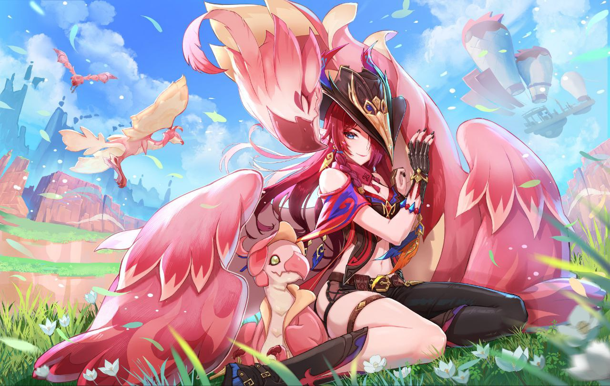

درباره من
من حمیدرضا رضایی هستم فارغ التحصیل رشته مهندسی کامپیوتر از کلاس اول دبستان عاشق کامپیوتر بودم هستم و خواهم بود اما بنا به دلیل هایی رفتم رشته تجربی خوندم و از آناتومی بدن اطلاعات زیادی پیدا کردم اما عشقم به کامپیوتر کم نشد و در دانشگاه رشته کامپیوتر رو انتخاب کردم و الان مهندس کامپیوتر شد بلافاصله زبان برنامه نویسی پایتون رو یاد گرفتم و رفتم سراغ وب چون کد نویسی رو خیلی دوست داشتم فقط کد نویسی بک اند رو یاد گرفتم با فرم ورک جنگو.